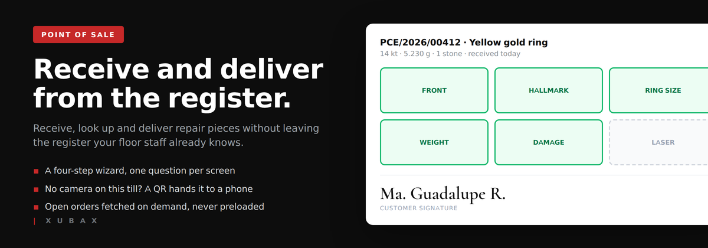
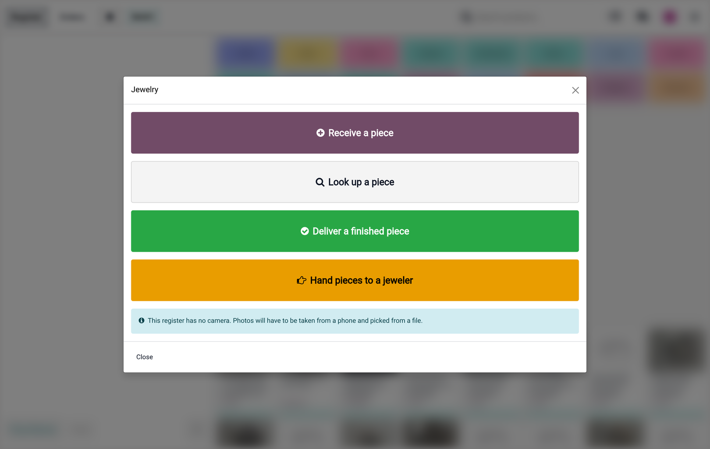
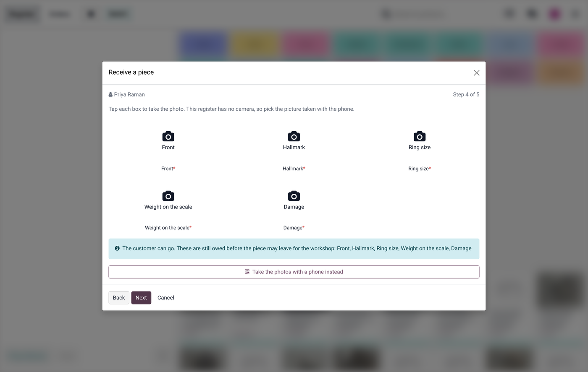
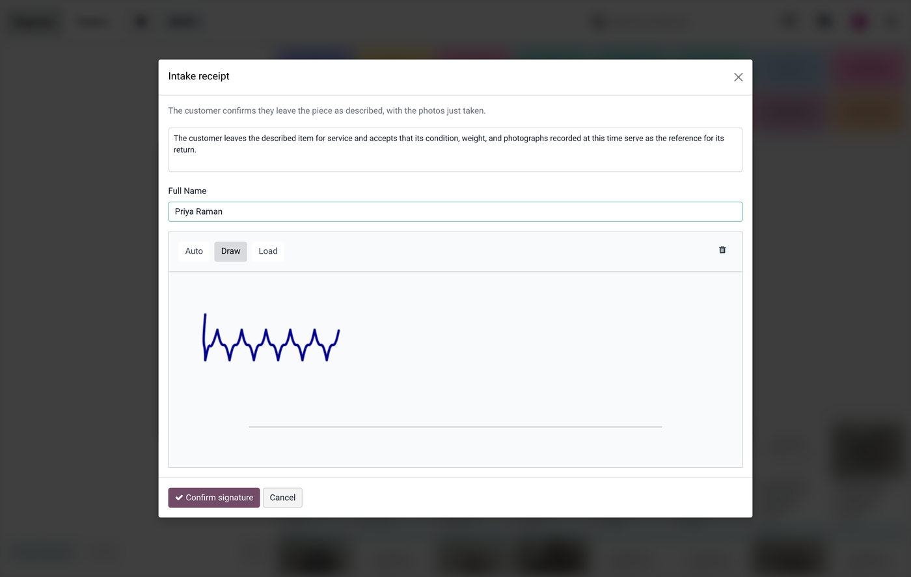
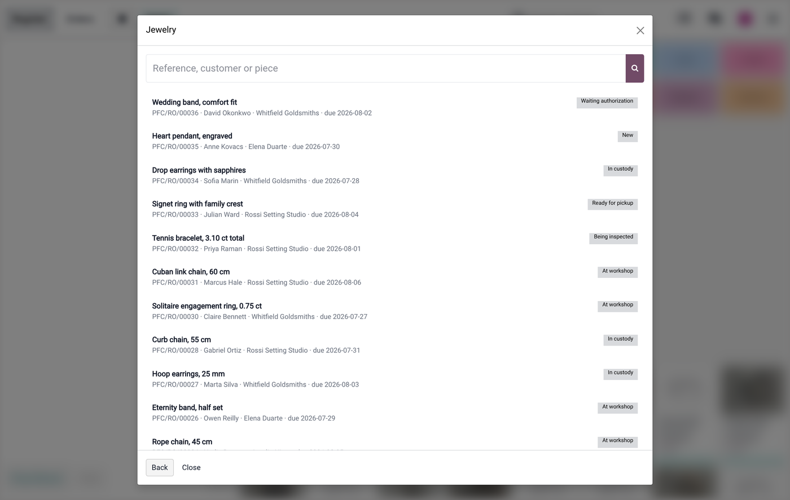

One button in the Point of Sale, switched on register by register. Behind it, three things and nothing else: receive a piece, look one up, deliver a finished one. Everything harder — assigning jewellers, quality control, settlements — stays in the back office where it belongs.

Four actions, and a register that already knows it has no camera.
Four steps, one question per screen, large type. The cashier never chooses what to do next: they answer what is in front of them.
The module notices and offers a QR. Any phone scans it, takes the photos, and they land straight on the piece file. The link expires on its own.
Service orders are fetched on demand, never preloaded. Your workshop backlog does not slow down the register.

The shot list adapts to what is on the counter — ring size only on rings — and the customer is never kept waiting for it.

The wording of the receipt is yours; the signature is taken on the screen the customer is already looking at.
Not when the customer pays, not when a quotation is confirmed. The gold is in your safe from the first second, so the record exists from the first second. If the order is confirmed later, the two link up by themselves without duplicating anything.

“Is my ring ready?” answered without leaving the register.
Requires Jewelry Repairs & Workshop.